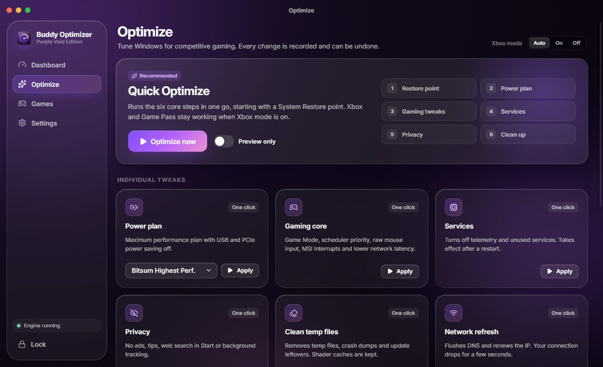
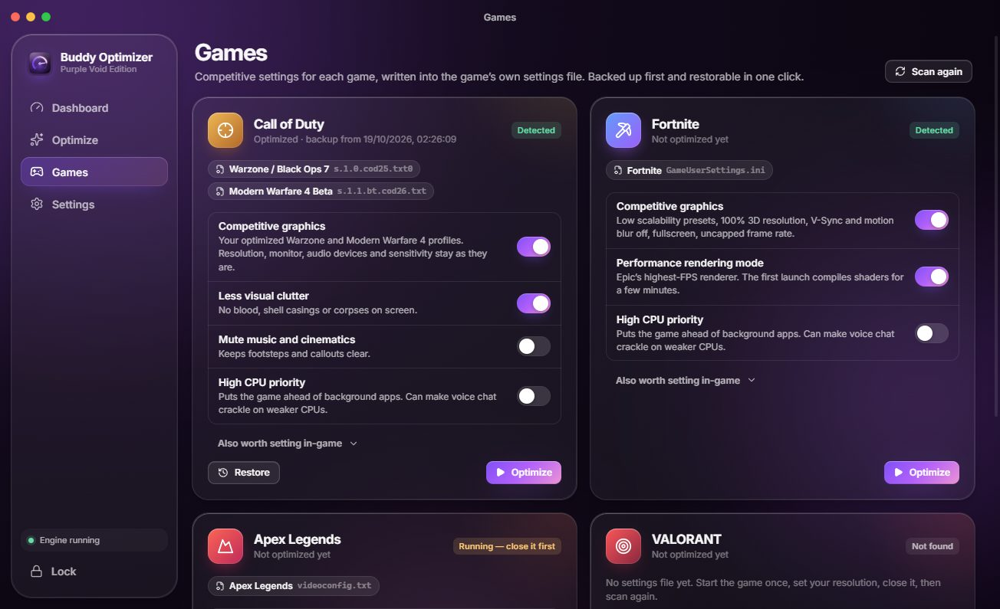
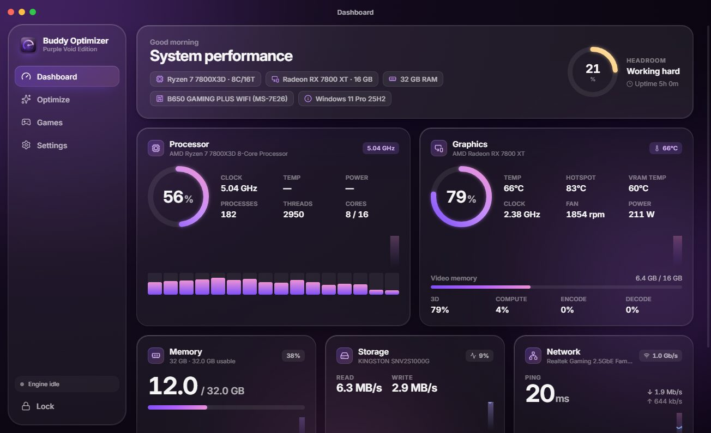
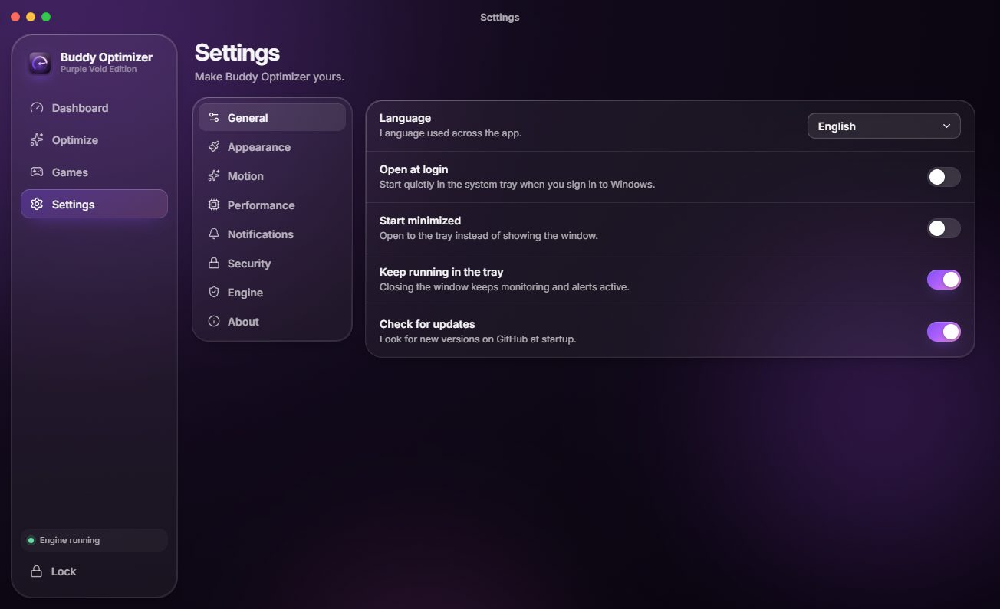
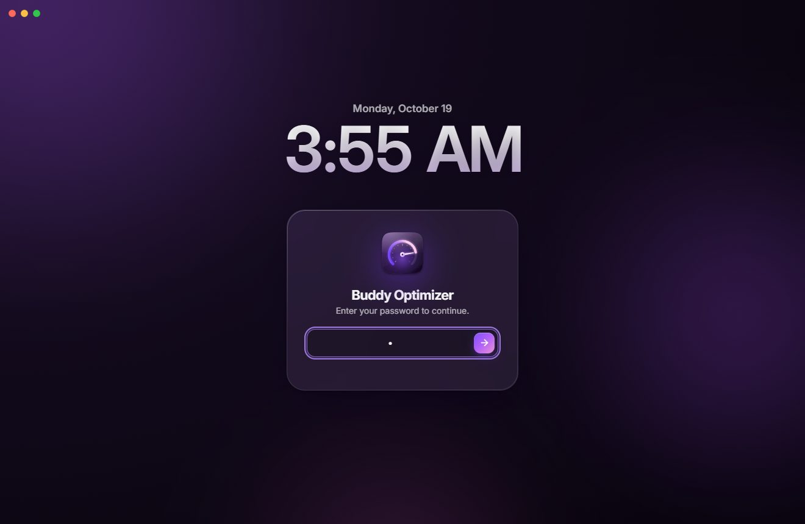

More fps.Less lag.
Buddy Optimizer tunes Windows for competitive gaming in one click and sets pro settings for your games. Free, and every change can be undone.



Stock Windows.
Windows ships tuned for office work. Flip the switch to see what Quick Optimize changes, in order, starting with a System Restore point.
- Restore pointNoneCreated
- Power planBalancedHighest perf.
- Game Mode and GPU priorityDefaultGames first
- Mouse accelerationOnRaw input
- Telemetry and servicesRunningOff
- Temp files and leftoversPiling upCleaned
Drag the gauge to turn it. Flip the switch to run the six steps.


Dashboard
Everything in one window.
Scroll, or tap a card to see that screen.
Your game, tuned for a win.
Pick a game and your graphics card to see the exact settings Buddy writes. It only changes keys the game already has, checks each value against what the game allows, and backs the file up first.
Warzone, Black Ops 7, MW4
Close the game, press Optimize, play. One click on Restore puts the file back exactly as it was.
Up and running in a minute.
First, install it.Download the installer from GitHub and run it. Windows 10 or 11, 64-bit.
Then unlock it.Enter the password your distributor gave you. Monitoring starts straight away.
Next, optimize.Windows asks once for administrator rights. Quick Optimize starts with a restore point.
Last, restart and play.Tune your games too. Updates install themselves from then on.
Good questions.
Is it free?
Yes. Buddy Optimizer is free and open source under the MIT license. The full source is on GitHub.
Can it get me banned?
Buddy never touches game files or game memory. It only edits the settings files the games write themselves, the same ones the in-game menu saves, and it does not install the kernel driver some anti-cheats block.
Can I undo the changes?
Yes. Every registry value, service and command is recorded before it changes, and any session rolls back from Optimize, Repair. Quick Optimize also creates a System Restore point first, and each game has its own Restore button.
Why does Windows ask for administrator rights?
Monitoring runs without them. Changing system settings needs them, so Windows asks once per session, the first time you optimize something.
Windows says "Windows protected your PC". Is that normal?
Yes. The installer is not code-signed yet, so SmartScreen warns about it. Click More info, then Run anyway.
Which games are supported?
Call of Duty (Warzone, Black Ops 7 and Modern Warfare 4), Fortnite, Apex Legends and VALORANT. The Windows tweaks help every game.
Why is there no CPU temperature?
Reading it needs a kernel driver that some anti-cheats, such as FACEIT, block. Buddy leaves it out on purpose; graphics card temperatures are shown.
Does it update itself?
Yes, from version 1.1.1 on. When an update has downloaded, the app shows a banner and a Windows notification with a one-click restart.
Get Buddy.
Play better.
The download is the installer from the latest GitHub release. Run it, unlock the app, and start with Quick Optimize.
- System
- Windows 10 / 11, 64-bit
- Download
- About 136 MB
- License
- MIT, free